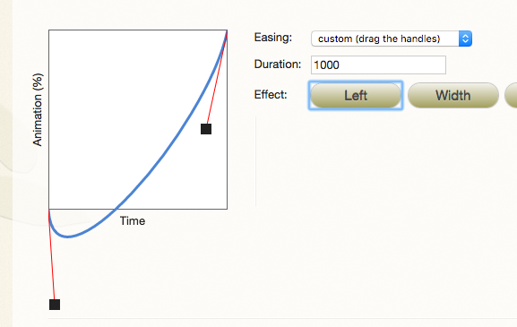

infskils css3 ch5.3 animations
I. Start with @keyframes plus a name
@keyframes +
uniqueName
{
0% { property: value; }
50% { property: value; }
100% { property: value; }
}
II. Apply these to an element
#exampleBox {
animation: uniqueName 2s 500ms 2 normal ease-in forwards;
}
Nota Bene:
animation-iteration-count: n | infinite;
(0 or neg number never starts)
animation-direction: normal | reverse | alternate
(normal is 0% to 100%)
imation-fill-mode: forwards | backwards | both | none;
Forwards is most common:
We are tell the browser that we want our animated element to hold on to the set of styles defined in the last keyframe.
This way, we don’t get that final jump back to the initial state of the element
There's one more to pay be aware of:
Animation-play-state: running | paused;
infskils css3 ch4.1 transitions
1. A start point and an ending point.
2. A trigger
What can be animated?
- padding
- margin
- color hex codes
- font-size
- scale, etc..
...in a word "discrete values".
What
cannot be animated?
- z-index
- visibility: hidden;
- color names
- display: block, etc...
Properties without "in-between states"
Properties * Duration * Timing * Delay
transition-property: all;
all props that CAN be transitioned WILL be transitioned.
transition-property: none;
disables all.
transition-timing-function:
ease;
ease-in-out;
ease-in;
ease-out;
linear;

You can achieve a bounce effect by dragging out of parameters.
BETTER TOOL: Cubic Bezier.com link
There is also an optional delay
Transition: property duration timing-function delay
transition: opacity 2s ease 500ms;
There is also a situation where discrete properties may be animated on same element with different timings.
#myElement {
font-size: 1vw;
color: #000;
width: 85vw;
transition-property: font-size, color, width;
transition-duration: 2s, 15s, 1s;
transition-delay: ease, linear, ease-out;
}
#myElement:hover {
font-size: 3vw;
color: #e24e4e;
width: 100vw;
}
Try it out!
different properties animate at different rates of speed.
infskils css3 animations ch3.1-3.2: preserve3d, perspective(), backface-visibility
Default for browsers is:
transform-style: flat
This means 3d stuff all remains in 2d and 3d adjusted elements are all visible.
This must be changed to:
transform-style: preserve-3d;
We also can add the perspective property to the transform:
perspective(~~px);
perspective value is distance from the action.
Lower numbers => closer (the more pronounced diff is between z-indexed items).
Higher numbers => further (less pronounced diff).
.container {
...
...
transform-style: preserve-3d;
position: relative;
transform: rotateX(-5deg) rotateY(-40deg) perspective(1000px);
}
.colorboxes {
...
opacity: .8;
position: absolute;
}
.shape1 {
transform: translateZ(0px);
background-color: wheat;
}
.shape2 {
transform: translateZ(120px);
background-color: maroon;
}
.shape3 {
transform: translateZ(260px);
background-color: green;
}
backface-visibility: hidden; is very simple.
When a shape is reversed, the default is visible--so reversed text.
backface-vis: hidden disables this.
infskils css3 animations ch2.6 Multiple
Use Multiple transform properties all on one line!
NO COMMAS!
-webkit-transform: translate(-20%, -20%)
scale(.5, .5)
rotate(45deg)
skewX(10deg)
skewY(20deg);
transform: none;
nullifies any transform
infskils css3 animations ch2.5 Origins
Point of rotation.
Transform Origin Property
transform origin takes X and Y values.
Values can be lengths, percentages or the
keywords top, left, right, bottom, and center.
-webkit-transform-origin: 50% 20%;
neg values also work
chrome needs -webkit-
infskils css3 animations ch2.4 Skewing Elements
alters angle of vertical or horiz axis
transform: skewX();
or
transform: skewY(25deg);
Important to note that these
X and Y values are EITHER OR! You cannot use both values at once.
infskils css3 animations ch2.3 rotate
Positive values ==> Clockwise
Negative values ==> Counter clockwise
rotateX(value)
rotateY(value)
or
rotate3d(x, y, z)
These are rotating around the very center of
the object. In later lessons we can change that behavior.
infskils css3 animations ch2.2 scale
First value effects horiz.
Second val effects the vertical scale.
Negative numbers reverse it or invert it or both!
transform: scale(-.5, -.5);
or
scaleX()
scaleY()
or
scale3d(sx, sy, sz)
scaleZ(sz)
The third value in scale3d or the value in scaleZ affects the scaling along the z-axis (e.g. the imaginary line coming straight out of the screen).
infskils css3 animations ch2.1 translate
It is important to note that transformed shapes have a kind of split-personality.
While they exist at the location where they are told to "be" they also "occupy" an empty space and nothing "flows" around where they are originally "placed".
transform: translate(-50%, -80px);
or
translate3d(x, y, z)
translateZ(z)
or
transform: translateX(value);
transform: translateY(value);
They mimic a kind of visibility: hidden property.
visibility: hidden
hides an element, but it will still take up the same space as before.
Translate (like visibility: hidden) preserves the space. AND it doesn't cause a reflow!
A NOTE ABOUT translateZ(0);
This triggers GPU!
as does
translate3d(0, 0, 0);